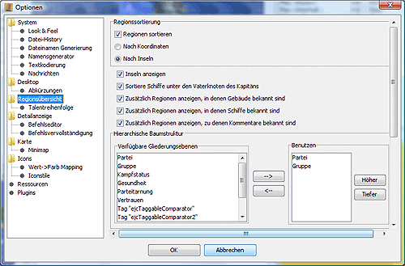
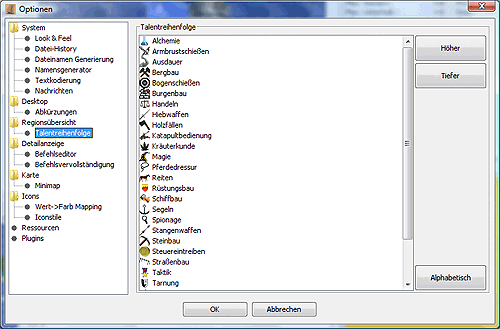

Regionsübersicht
In diesem Dialog kann man die Optionen der Regionsübersicht
einstellen:

-
Regionssortierung
Hier kann man die Anzeige der Regionsnamen nach
Koordinaten oder nach Inselzugehörigkeit einstellen.
Wird zusätzlich die Option Inseln anzeigen
aktiviert, wird den Regionen noch ein "Ordnungsknoten"
für die Insel vorangestellt, der auf- und zugeklappt
werden kann.
Magellan kann die Regionen eines Reports in Inseln
einteilen und sie in der Regionübersicht nach Insel
geordnet darstellen. Prinzipiell sind auch weitere
Einsatzmöglichkeiten für Inseln denkbar.
Mit dem Menüpunkt 'Inseln erfassen' im Menü
'Extras' wird die Zuordnung von Inseln zu Regionen
vorgenommen. Dies ist Voraussetzung, um die Regionen nach
Inseln sortieren zu können.
Um die Regionsübersicht nach Inseln sortieren zu
lassen, sind in diesem Dialog folgende Einstellungen zu
machen:
- Regionen sortieren aktiviert
- Nach Insel ausgewählt
- Inseln anzeigen legt fest, ob die Inseln auch
tatsächlich in der Übersichtsanzeige
dargestellt werden. Nur wenn diese Option aktiviert ist,
kann man die Inselnamen und -beschreibungen
ändern.
- Hierarchische Baumstruktur
Hier kann eingestellt werden, welche Gliederungsebenen es in
der Regionsübersicht gibt. Voreinstellung sind Partei
und Gruppe. Um weitere Ebenen hinzuzufügen, muss man sie
in der linken Auswahlbox auswählen und per Pfeil nach
rechts übernehmen. Um Ebenen zu entfernen muss man sie
rechts auswählen und per Pfeil nach links löschen.
Zusätzlich kann man über die "Höher"- und
"Tiefer"-Knöpfe die Reihenfolge in der Hierarchie
verändern.
-
Einheitensortierung
Die Ausgabe der Einheiten kann hier nach Reportreihenfolge
(Reihenfolge der Einheiten im CR), Talentname oder
Einheitenname sortiert werden. Bei der Sortierung nach
Talenten hat man noch weitere Einstellmöglichkeiten.
Voreingestellt ist die Sortierung nach dem besten Talent,
d.h. eine Einheit mit Hiebwaffen T6 und Taktik T3 wird also
bei den anderen Hiebwafflern einsortiert, und Reihenfolge
nach dem Alphabet, d.h. die Holzfäller folgen auf die
Hiebwaffler.
Will man diese Reihenfolge ändern, so kann man im
Unterpunkt Talentreihenfolge die Sortierreihenfolge der
Talente angeben und so z.B. alle Kampf- oder
Produktionstalente in Blöcken anzeigen lassen. Auch
ist es möglich mit der Aktivierung des Punktes Nach
höchsten Talent in der Talentreihenfolge, die
Einsortierung von Einheiten mit mehreren Talenten zu
beeinflussen. Hat man den Punkt aktiviert und gleichzeitig
Taktik in der Talentliste vor Hiebwaffen stehen, so
würde die Einheit mit Hiebwaffen T6 und Taktik T3 bei
Taktik einsortiert werden.
- Baum-Expansion
Mittels dieser Optionen lässt sich bestimmen, ob und
wie weit der Regionsbaum aufklappt, wenn eine Region auf
der Karte aktiviert
wird. Die Optionen der rechten Spalte beeinflussen dabei das
Öffnungsverhalten und die der linken Spalte das
Schließverhalten vorher aufgeklappter
Regionsinformationen.
Talentreihenfolge

Die Änderung der Talentreihenfolge erfolgt durch
Auswahl des entsprechenden Talentes mit der Maus
anschließendes Verschieben durch die Schaltflächen
Höher bzw. Tiefer.